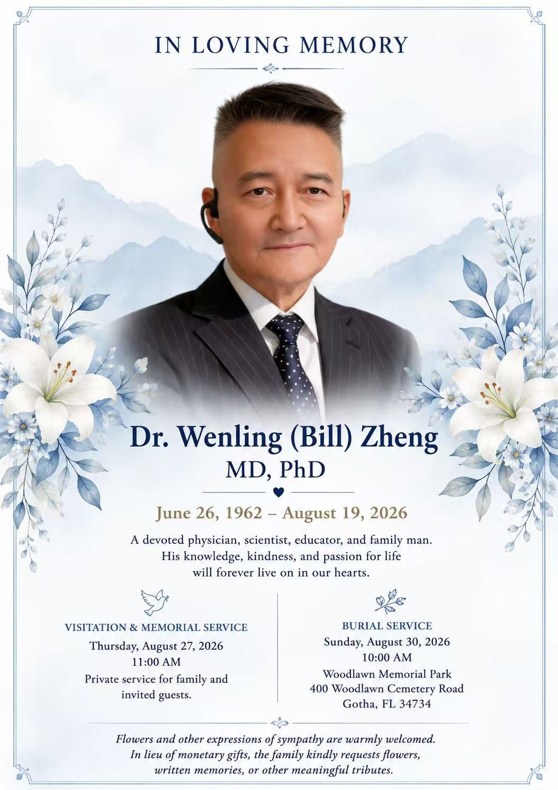

沉痛悼念著名的生物学家郑文岭教授（1962—2026）
2008 年 12 月，广东佛山三水，第二届中国基因产业集群大会（世界基因产业大会）隆重举行。这场由南方医科大学基因工程研究所与华略创办人共同策办的盛会，汇聚 40 多个国家和地区、100 余所高校与科研机构的 380 余位专家，诺贝尔奖得主 Avram Hershko 登台领衔主讲，成为当年中国基因科技领域最具影响力的国际平台。
而这一切的背后，站着一位默默耕耘的科学家——郑文岭教授。
郑文岭教授（1962—2026），河南开封人，南方医科大学基因工程研究所教授、主任医师、博士生导师，国内首个基因芯片发明者，广州留学人员商会会长。他毕生致力于基因技术理论与实践，在分子克隆、基因诊断、基因治疗、基因疫苗与生物信息学等领域卓有建树；他提出的《细胞模型新假说》《细胞语言学》等原创理论，为中国生命科学留下了宝贵的思想遗产。
2008 年，正是郑文岭教授与马文丽教授伉俪的全力推动，促成南方医科大学基因工程研究所与三水区深度合作，规划打造千亩「基因谷」，将三水「中国长寿之乡」的资源禀赋与基因科技的前沿成果对接，为生命健康产业播下了种子。这场大会，是他生前主导的、与创办人携手合作的里程碑事件——既是学术交流的盛典，更是产业落地的起点。
2026 年 8 月，郑文岭教授溘然长逝。斯人已去，风范长存。他严谨求实的治学精神、敢为人先的创新勇气、造福人类的济世情怀，永远激励着后辈前行。
谨以此页，深切缅怀郑文岭教授。
郑文岭教授像加黑框，以示深切缅怀